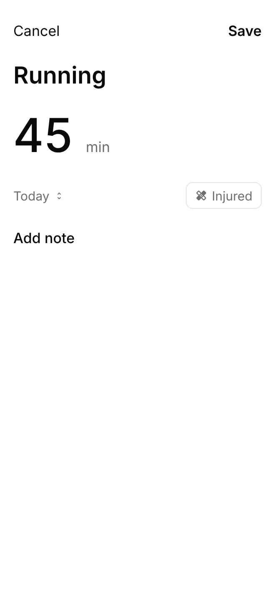
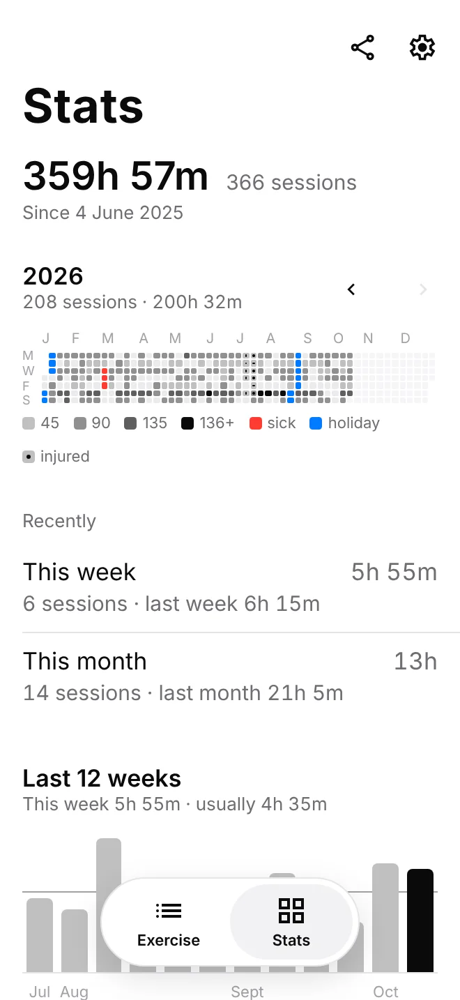
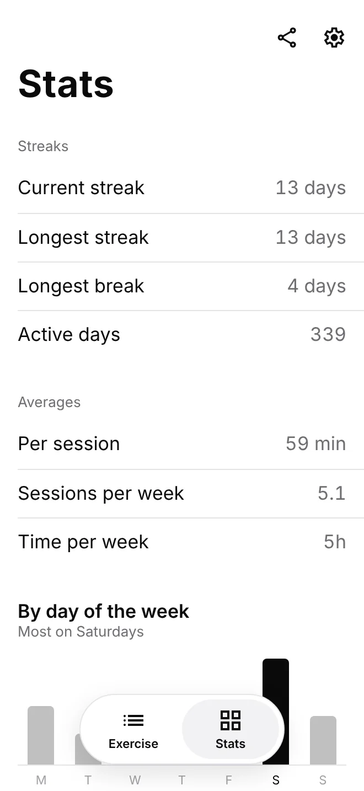

Support
Getting started
The first time you open log, tap Start fresh, or Import CSV to bring in history from the web Exercise Tracker.
There are two tabs: Exercise and Stats. The gear opens Settings, where you can change the appearance (light, dark or match your phone), manage exercise types, and export or import.
Logging exercise
- Tap +, bottom right.
- Tap what you did. Something new? Tap New type, or just type its name and tap Add.
- Type the minutes. Tap the date under them to pick another day.
- Add a note if you like, then tap Save.

Tap any session to change it, or to delete it with Delete entry at the bottom.
Your streak is the number of days in a row you've exercised, up to today. Until you log something today, it counts up to yesterday.
Days off and injuries
Pick Off sick, Off injured or On holiday as the type. They take no minutes, and the until menu covers several days at once, up to a year. Days already marked are skipped.
A day off keeps your streak going without adding to it, never counts as a break, and stays out of your stats. On the heatmap, sick days are red, injured days off purple and holidays blue.
Trained through an injury? Tap Injured when you log the session. It counts as normal, and that day shows as a circle on the heatmap instead of a square, still shaded by how long you went.
Exercise types
log starts with cycling, workout, squash, running, pilates and swimming. Add your own as you log, with New type, or in Settings → Exercise types, where you can also:
- Tap a type to rename it. Every session of that type follows. Renaming to a type you already have merges them.
- Press and hold a type to delete it. Only types with no sessions can be deleted.
Stats and the heatmap
The Stats tab shows your total time, then a heatmap of the year: one square per day, darker for more minutes (up to 45, 90, 135, then more). Use the arrows for earlier years, and tap a square to see that day.


- Streaks: your current and longest streak, your longest break, and the days you've exercised.
- Averages: minutes per session, and sessions and time per week, from your first session to your last.
- By exercise: your most frequent exercise, then time and sessions for each, and your sick and holiday days.
Finding a session
On the Exercise tab, tap the magnifying glass to search by type or note. To see every session of one exercise, tap it under By exercise on the Stats tab. Tap the calendar button to browse by month: a dot marks each day with an entry, tapping a day lists it, and + then logs on that day.
Reports, exports and new phones
Everything is stored on your phone. Your phone's own backup, such as iCloud, includes it.
- Share report, on the Stats tab, makes a PDF of your stats, heatmaps and full log.
- Settings → Export CSV saves every session as a CSV file, the web tracker's format:
date, exercise_type, duration_minutes, notes. It opens in any spreadsheet. - Settings → Import CSV reads a CSV file. If you already have sessions, choose Add to my history, which skips sessions you already have, or Replace everything.
To move to a new phone, export a CSV on the old one and import it on the new one. If a file can't be imported, log lists the lines that need fixing and changes nothing.
Settings → Delete everything removes all your sessions and types from the phone, after asking.
Still stuck?
Open an issue. Read how log handles your data in the privacy policy.